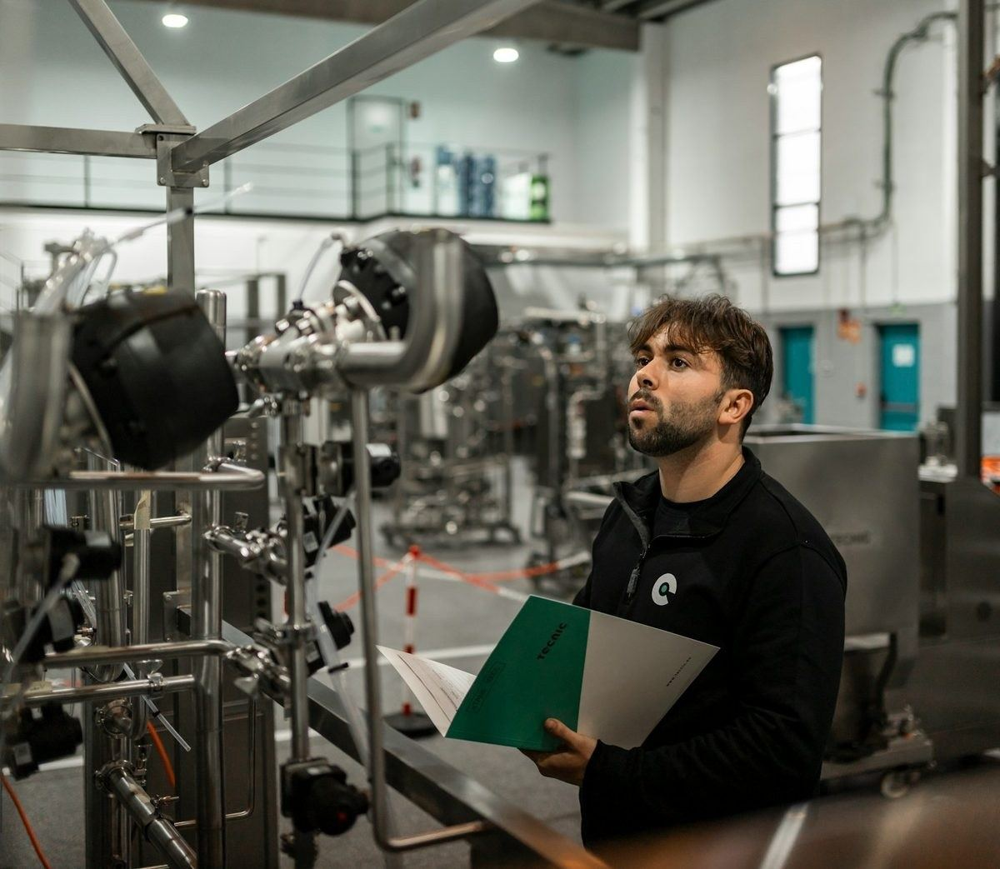

Conclusions, Recommendations & Referencing
Poster Supervision 1: Title and Scope Check.
Department of Languages & General Studies · Faculty of Business and Communication (FPK) · UniMAP · Semester 1, 2026/2027
By the end of today you will be able to
| Part | Skill |
|---|---|
| A | Tell the difference between a finding, a conclusion and a recommendation |
| A | Check whether a conclusion is really supported by the evidence |
| A | Write a recommendation that someone can actually act on |
| B | Cite sources in the text, in APA 7 and IEEE style |
| B | Build a reference list correctly in either style |
| B | Cite and declare the use of generative AI |
| C | Narrow a broad theme into a title and scope you can write about |
Drawing conclusions from evidence
How engineers move from numbers to advice.
Four steps, four different things
Writers often mix these up. Keeping them apart is most of the skill.
From numbers to advice: the backbone
Each step answers a different question. Only the conclusion needs judgement.
| Step | The question it answers | How to check you have it right |
|---|---|---|
| DATA | What was measured? | Raw numbers. No opinion in them at all. |
| FINDING | What do the numbers show? | A fact taken from the data. Anyone reading the same table would write the same finding. |
| CONCLUSION | What does that mean? | You compare the finding with a standard, a target or a rule. This needs judgement. |
| RECOMMENDATION | What should someone do now? | An action, with a person to do it and a condition attached. |
Which step needs judgement, because you compare with a standard, a target or a rule?
Reading: Markel & Selber (2025), Ch. 18; Alfred, Brusaw & Oliu (2019). Come back to this table after every activity.
The data
NorthStar Components, Kulim. Water used by department, in thousands of cubic metres, per quarter. Spend two minutes with the table first. What is the first thing you notice?
| Department | Quarter 1 | Quarter 2 | Change | % change |
|---|---|---|---|---|
| Production | 128 | 141 | +13 | +10.2% |
| Cooling tower | 96 | 118 | +22 | +22.9% |
| Cleaning | 34 | 33 | −1 | −2.9% |
| Landscaping | 22 | 27 | +5 | +22.7% |
| TOTAL | 280 | 319 | +39 | +13.9% |
Q1 and Q2, department by department
Thousand m³. Look for the one that moves the other way.
Which department used less water in Q2?
The options
Three ways the company could reduce its water use.
| Measure | Cost | Saving | Time to install | Where it applies |
|---|---|---|---|---|
| Closed-loop cooling water system | RM 240,000 | 20–25% | 9 months | Cooling tower |
| Rainwater harvesting | RM 85,000 | 6–9% | 4 months | Landscaping, cleaning |
| Low-flow fittings and leak detection | RM 30,000 | 4–7% | 6 weeks | All departments |
Before you go on: which measure would you choose, and why? One sentence. You will compare it with the worked answer on the next slide.
The four steps, worked through

Findings (data): what the numbers show
- Total water use rose by 13.9% from Q1 to Q2.
- The cooling tower had the largest actual increase: +22 thousand m³, or 56% of the total rise.
- Landscaping rose by a similar percentage (+22.7%), but only by 5 thousand m³.
- Cleaning was the only department that used less water.
Conclusion: what it means
- The cooling tower is the main priority because it contributed most to the total increase.
- Landscaping rose quickly, but from a much smaller starting point.
Recommendation: what to do
- Install the closed-loop cooling system first because it targets the main problem.
- Install low-flow fittings at the same time. They cost RM 30,000 and take six weeks.
- Reconsider rainwater harvesting after the effect of the cooling system has been measured.
Notice the recommendation never says “I think”. That is the register point from Week 5, applied here.
Three lessons from the worked example
The biggest percentage is not always the biggest problem
Landscaping rose 22.7% and the cooling tower 22.9%, almost the same rate. But one is a rise of 5 units and the other of 22. Reading only percentages is the most common error in data reports.
You can recommend more than one thing
“Do the big one, run the cheap one alongside it, wait on the third” is stronger than picking a single winner.
Waiting is a real recommendation
As long as you say what would settle the question.
Percentage is not size
Each dot is a department: how fast it grew against how much water it added.
A student writes: “Landscaping should be the first priority because it rose 22.7%.” What went wrong?
A conclusion is not…
- Not a repeat of a finding. “Water use rose 13.9%.” is still a finding.
- Not a repeat of the task. “This report looked at water use…” adds nothing new.
- Not a personal opinion. “We feel…” needs evidence or a standard.
- Not new data. A conclusion must come from your findings.
- Not a recommendation. “Install a closed-loop system.” is an action.
Which two of these five do students do most often?
Label each sentence
F = Finding · C = Conclusion · R = Recommendation · B = Background. Drop each sentence into the right box.
Check your answer: the key and why
1 = F · 2 = C · 3 = R · 4 = B · 5 = F · 6 = C
- Item 2 is a conclusion because “main cause” is a judgement: it ranks the causes. The 56% underneath it is the finding.
- Item 4 is background. Background sentences often end up in the wrong section, where they add nothing.
- Item 6 is a conclusion because it compares the data with the company’s own target.
A simple way to make a conclusion: ask “So what?”
Start with the data, compare it with something, then say what it means.
Finding
The cooling tower rose by 22 thousand m³…
Comparison point
…and accounted for 56% of the total rise.
Conclusion
So, it is the main priority for water-saving action.
Where the +39 came from
Thousand m³ added between Q1 and Q2. The comparison point is the biggest block.
Cleaning fell by 1, so the net rise is +39. 22 of 39 is 56%. That is the “so what?”: the cooling tower is the main priority.
The link between the finding and the conclusion is the hidden link. In reading you will also meet the formal term for it: a warrant.
Finding + point = conclusion. Then ask: “So does this finding mean for the reader?”
Conclusion-making checklist
1. Choose the main finding
Which number matters most? Cooling tower water use rose by 22 thousand m³.
2. Compare it
Compared with what? It made up 56% of the total increase.
3. Say what it means
So what? The cooling tower is the main priority.
4. Check the limit
Is the claim too big? Do not claim beyond this company and these two quarters.
Three ways a conclusion goes wrong
Percentage without size
Use both the percentage and the actual amount. A large percentage can come from a small starting value.
“At the same time” does not mean “because of”
Two things changing together does not prove that one caused the other. (The formal terms: correlation and causation.)
Claiming more than the data shows
Two quarters at one site cannot represent a whole industry or a long-term trend.
Tap all three. Keep fault 1 in mind during the next activity.
Find the problem
“Landscaping water use rose by 22.7%, the joint highest of any department. We conclude that landscaping should be the company's first priority.”
“The number of workplace injuries went up in the same year the company hired 40 new contract workers. We conclude that contract workers cause more accidents.”
“All 18 workers we asked at our factory said the recycling bins were badly labelled. We conclude that factories in Malaysia have poor recycling signs.”
Rewrite each conclusion so it can be defended
Rewrite A, B and C from the last slide. Fix the fault in each one. Your rewrites will probably be longer than the originals.
Check your answer: model rewrites
A. “Landscaping had the joint highest percentage rise, but it started from a small base. It is only 13% of the total increase, so it is a lower priority than the cooling tower.”
B. Something else may explain both: the new workers may have been given the more dangerous jobs, or shorter training. “Injuries and contract hiring rose in the same period. The data do not show that one caused the other. We would need to compare injuries by job type and by training received.”
C. “All 18 workers at this factory said the bins were badly labelled. This suggests a problem worth checking at other sites. It does not show a national pattern.”
Every rewrite is longer than the original. Being accurate costs words, so plan for that.
Careful language: a quick reminder from Week 5
The verb you choose is itself a claim about how strong your evidence is.
How strong is your evidence? Choose the verb to match
The longer the bar, the stronger the claim you may make.
| How strong is your evidence? | Language to use | Example |
|---|---|---|
| Clear and complete, straight from your data | shows · accounts for · is | “The cooling tower accounts for 56% of the increase.” |
| Consistent, but covers only part of the picture | indicates · points to | “The data indicate that use is rising in most departments.” |
| One test only, or a small sample | suggests · appears to · tends to | “The figures suggest a rise, although two quarters is a short period.” |
| A guess that goes beyond your data | may · could · it is possible that | “Higher production may partly explain the rise.” |
| Your data does not support it | Do not write the sentence. | — |
Careful language is not weak language. Claiming more than you can show is what damages your credibility.
Careful language is not weak language.Week 6 · Careful language
In rewrite C, which verb matches “all 18 workers at one factory”?
Writing recommendations
A recommendation nobody can act on is not a recommendation.
Five things a recommendation needs
A useful recommendation answers five questions. If several are missing, the action is too vague.
Paste or write the draft recommendation you brought from Week 5, then tick the slots it fills.
Does it answer…
- WHO?
- WHAT?
- WHEN?
- UNDER WHAT CONDITION?
- HOW URGENT?
Most students find that WHO and WHEN are missing.
Weak and strong recommendations
Inside a strong recommendation
The weak version has none of the five slots filled.
WEAK “The company should use less water.”
“The Facilities Departmentwho shouldurgency install a closed-loop cooling systemwhat by the third quarterwhen, to cut cooling water use by 20%target.”
| Weak | Strong | What was added |
|---|---|---|
| “The company should use less water.” | “The Facilities Department should install a closed-loop cooling system by the third quarter, to cut cooling water use by 20%.” | Who, what exactly, by when, a measurable target |
| “Workers should be more careful about safety.” | “All site workers should attend the new safety briefing before the next shift change. Supervisors should record attendance and report anyone who misses it.” | Who, what, when, and how it will be checked |
| “Something should be done about waste.” | “The Production Department should sign a contract with a licensed recycler by January, and publish recovery figures every quarter.” | Who, a clear standard, a deadline, a way of showing progress |
| “More research is needed.” | “Water use should be measured again after one full quarter of the new system, before rainwater harvesting is reconsidered.” | What exactly to measure, when, and what decision it unlocks |
Which two sentences are banned from your report as the “emptiest” recommendations?
Spoken language and written language
Both are correct English. Using the wrong one for the situation is the mistake. Two clear signals of written register: no first person, and no contractions.
- “If I were you, I'd go with the fittings first.”
- “You might want to think about the cost.”
- “Have you thought about doing both at once?”
- “That's a fair point. I'll give it a go.”
- “We really need to sort out the cooling tower.”
- “It is recommended that the fittings be installed first.”
- “The cost implications should be considered.”
- “Both measures should be implemented together.”
- (no written equivalent — replies belong in discussion)
- “Action on the cooling tower is required before Q3.”
Rewrite for a written report, and add what is missing
Rewrite each one
- “I think you should probably do the cheap one first because it's quicker.”
- “It'd be good if someone looked at the safety issue at some point.”
- “Honestly, just go for solar, it's way better than diesel.”
- “We might want to do more checking maybe.”
Sentence frames you can use
It is recommended that … · … should be installed / carried out / reviewed … · … because … · … provided that … · … by the end of …
Formal register: no “I”, no “you”, no contractions. Add WHO, WHEN or a condition where it is missing.
Check your answer: model rewrites
- “The low-flow fittings should be installed first, as their six-week installation time allows savings to begin within the current financial year.”
- “The Safety Committee should carry out a risk assessment of the exposed drive coupling before the machine returns to service.”
- “Solar generation should be chosen in preference to diesel, provided that battery storage is included to cover periods of low sunlight.”
- “Water use should be measured again after one full quarter of operation, before further spending is approved.”
All four still use careful language and still commit to an action. Careful language does not mean refusing to decide.
Limits are part of the conclusion, not an apology
Say what the data can show and what it cannot show.
Stating a limit makes the conclusion more accurate, not weaker.Week 6 · Limits
Stating a limit makes the conclusion more accurate, not weaker. It protects your argument.
Complete the limit sentence for Practice 2C: “A sample of means these results apply only to this .”
Checking a conclusion before you use it
Yours, a group member's, or one produced by an AI tool.
A confident sentence is not automatically a supported sentence.Week 6 · Checking a conclusion
STOP.
A confident sentence is not automatically a supported sentence.
CHECK THE SOURCE.
Where did the number or claim come from?
CHECK OTHER SOURCES.
Does an independent source report the same thing?
TRACE IT BACK.
Go back to the original data or source.
SIFT: four moves before you trust a sentence
Stop, Investigate, Find better coverage, Trace.
Final test: can you point to the evidence that makes the sentence true? If not, remove it.
This is the SIFT method (Stop, Investigate, Find better coverage, Trace) in plain language: Caulfield, “SIFT (The Four Moves)”, 2019. It links back to Week 3, where you evaluated source credibility.
Referencing & citation
How to show a reader exactly where your information came from.
Why we cite
- To let the reader check your evidence and standards (the hidden link from Part A).
- To support claims with evidence.
- To give credit for ideas, data, figures, photographs and designs.
- To show which information came from another source.
Which sentence is evidence, not a vague claim?
What counts as plagiarism

Copying without saying where it came from
Text, code, figures, tables, photographs, diagrams, from any source, including another student's work.
Poor paraphrase
Changing a few words but keeping the original sentence structure, even if you add a citation.
Invented or unchecked references
Listing a source you never opened, or one that does not exist. AI tools produce these regularly. Open every single one.
Undeclared AI use
Handing in AI-generated text, images or analysis as your own unaided work.
Reusing your own work
Submitting work from another course or semester again, without saying so.
Paying someone else
Asking or paying another person to do the work for you. The most serious type.
Six kinds of plagiarism
Illustrative order, from the easiest to do by accident to the most serious.
You change a few words in a paragraph, keep its structure, and add a citation. Is that plagiarism?
APA 7 and IEEE compared
Citation anatomy: the same article, two styles
Same colour, same part. Notice what moves, what is dropped and what is rewritten.
APA 7 author and year
In the text
…water reuse is growing (Zainal & Abdul Rahmanauthors, 2023year).
In the list
Zainal, N., & Abdul Rahman, S.authors (2023year). Water reuse in semiconductor manufacturingarticle title, plain. Journal of Cleaner Production, 45journal + volume, italic(2issue), 112–125pages. https://doi.org/10.1016/j.jclepro.2023.01.008doi link
IEEE a number in square brackets
In the text
…as reported in [1]number and confirmed by [2], [3]numbers.
In the list
[2]number N. Zainal and S. Abdul Rahmanauthors, “Water reuse in semiconductor manufacturingarticle title, in quotes,” J. Cleaner Prod.journal, abbreviated, vol. 45, no. 2, pp. 112–125volume, issue, pages, Feb. 2023date, doi: 10.1016/j.jclepro.2023.01.008doi.
| APA 7th edition | IEEE | |
|---|---|---|
| Used in | Social sciences, education, business, and many engineering programmes | Electrical, electronic and computer engineering |
| Current version | 7th edition (2020). Still current; there is no 8th edition | IEEE Reference Guide, updated from time to time. Check the IEEE Author Center |
| In the text | Author and year: (Zainal & Abdul Rahman, 2023) | A number in square brackets: [1], [2], [3] |
| Order of the list | Alphabetical, by the author's family name | By number, in the order the sources first appear |
| Link to the source | DOI written as https://doi.org/… | doi: 10.xxxx/xxxxx at the end of the entry |
| In a small space | Takes more room | Usually takes less room |
APA 7: citing in the text
| Case | Pattern |
|---|---|
| One author | Ginsberg (2014) reported that… / …output fell sharply (Ginsberg, 2014). |
| Two authors | Chambers and Carbonaro (2013) found… / …(Bransford & Liu, 2015). [“and” in the sentence, “&” inside brackets] |
| Three or more | Abdul Khalid et al. (2019) argued… / …(Arif Rahman et al., 2020). |
| An organisation | Department of Occupational Safety and Health (DOSH, 2023) recorded… then later: DOSH (2023) also notes… |
| No date | Robinson (n.d.) observed… |
| Two sources at once | (Haddon, 2015; Larsen, 2013) [alphabetical, separated by a semicolon] |
| Same family name | A. E. Larsen (2011) and M. K. Larsen (2014) disagree. [note the space between the initials] |
| A direct quotation | …(Lee, 2007, p. 88). [a page number is required for quotations] |
Complete the APA citations
Type one word or symbol in each gap, using the patterns from the last slide.
Chambers Carbonaro (2013) found…
…(Bransford Liu, 2015).
Abdul Khalid (2019) argued…
Robinson () observed…
(Haddon, 2015 Larsen, 2013)
…(Lee, 2007, ).
Which two-source citation is correct?
APA 7: the reference list
Hanging indent; alphabetical order. The journal title and volume number are in italics; the issue number and page range are not. Book titles are in italics, sentence case.
Journal article with a DOI
Zainal, N., & Abdul Rahman, S. (2023). Water reuse in semiconductor manufacturing. Journal of Cleaner Production, 45(2), 112–125. https://doi.org/10.1016/j.jclepro.2023.01.008
Report by an organisation: the type you will use most often
International Labour Organization. (2024). Safety and health at the heart of the future of work. ILO. https://www.ilo.org/…
Government statistics
Department of Statistics Malaysia. (2024). Compendium of environment statistics 2024. DOSM. https://www.dosm.gov.my/…
Web page
Board of Engineers Malaysia. (2024, March 15). Code of professional conduct. BEM. https://www.bem.org.my/
Book
Markel, M., & Selber, S. (2025). Technical communication (14th ed.). Macmillan Learning.
Wikipedia article: no author. Cite by title, and link the permanent version
Circular economy. (2024, November 19). In Wikipedia. https://en.wikipedia.org/w/index.php?title=Circular_economy&oldid=…
Wikipedia is a good place to find sources, not a source to cite.
In the journal entry, which parts are in italics?
IEEE: in the text and in the list
In the text
- Numbers in square brackets, in the order the sources first appear: “…as reported in [1] and confirmed by [2], [3].”
- The number replaces the author and the year: “Reference [4] recorded a 12% increase.” or “…a 12% increase was recorded [4].”
- A range: [1]–[4]. Several at once: [1], [3], [7].
Book and journal titles are in italics. Article and paper titles go in quotation marks. Journal names are abbreviated. List up to six authors; for more than six, give the first author followed by et al.
The reference list
- [1] M. Markel and S. Selber, Technical Communication, 14th ed. Boston, MA, USA: Macmillan Learning, 2025.
- [2] N. Zainal and S. Abdul Rahman, “Water reuse in semiconductor manufacturing,” J. Cleaner Prod., vol. 45, no. 2, pp. 112–125, Feb. 2023, doi: 10.1016/j.jclepro.2023.01.008.
- [3] A. B. Author, “Adaptive load scheduling for rural microgrids,” in Proc. IEEE Int. Conf. Smart Grid (ICSG), Kuala Lumpur, Malaysia, May 2024, pp. 45–52, doi: 10.1109/ICSG.2024.00045.
- [4] Department of Occupational Safety and Health Malaysia. “Occupational accident statistics 2023.” DOSH. Accessed: Mar. 15, 2026. [Online]. Available: https://www.dosh.gov.my/
- [5] Quality Management Systems — Requirements, ISO 9001:2015, 2015.
In IEEE, how is the title of a journal article shown?
IEEE: what has changed
The previous deck taught a form from before 2018. These are the differences a reader notices at once. If you hold an older handout, check it against the current IEEE Reference Guide on the IEEE Author Center.
| Part of the entry | Old form (previous deck) | Current form |
|---|---|---|
| Author | W.K. Chen. (a full stop after the name) | W. K. Chen, (a comma, and a space between initials) |
| Book title | Linear Networks and Systems (plain) | Linear Networks and Systems (italic) |
| Place | Belmont, CA: | Belmont, CA, USA: (the country is included) |
| Journal article | …vol. 33, pp. 56–99, Jan. 1979. (no DOI) | …vol. 33, pp. 56–99, Jan. 1979, doi: 10.xxxx/xxxxx. |
| Web source | Internet: www.example.edu, Oct. 25, 2000 [Nov. 29, 2003]. | Accessed: Nov. 29, 2003. [Online]. Available: https://www.example.edu |
| The biggest change | There is no DOI anywhere in the old deck. | A DOI is now expected on every article that has one. |
Which author form is current IEEE?
Sources the old guide did not cover
Engineering students cite ISO and MS standards regularly. If time is short, learn the Standard tab first.
APA 7 International Organization for Standardization. (2015). Quality management systems — Requirements (ISO 9001:2015). https://www.iso.org/standard/62085.html
IEEE Quality Management Systems — Requirements, ISO 9001:2015, 2015.
APA 7 Author, A. A. (2024). Title of dataset (Version 1.2) [Data set]. Repository. https://doi.org/…
IEEE A. A. Author. “Title of dataset.” (2024). Distributed by Repository. doi: 10.xxxx/xxxxx.
APA 7 Author, A. A. (2024). Name of software (Version 2.1) [Computer software]. https://github.com/…
IEEE A. A. Author. (2024). Name of Software (Version 2.1). [Online]. Available: https://github.com/…
APA 7 Inventor, A. A. (2023). Title of patent (U.S. Patent No. 11,123,456). U.S. Patent and Trademark Office.
IEEE A. A. Inventor, “Title of patent,” U.S. Patent 11 123 456, Mar. 4, 2023.
APA 7 Author, A. A. (2025). Title of preprint. arXiv. https://doi.org/10.48550/arXiv.…
IEEE A. A. Author, “Title of preprint,” 2025, arXiv:2501.01234.
Citing generative AI: APA 7
APA updated its guidance in September 2025. The main idea: citing and declaring are two different things.
If you kept AI-generated content, cite the tool
Reference: OpenAI. (2025). ChatGPT (GPT-5) [Large language model]. https://chatgpt.com/
In the text: (OpenAI, 2025) or OpenAI (2025) generated…
For one particular conversation: OpenAI. (2025, September 9). Title of chat [Generative AI chat]. ChatGPT. https://…
And explain how you used it
Say which tool, which version, what you asked it, and what you did with the answer.
Put the exact question you asked, and any long piece of generated text, in an appendix.
Why must your prompt go in an appendix?
Citing generative AI: IEEE
IEEE treats AI tools as software
[6] ChatGPT. (GPT-4). OpenAI. Accessed: Sep. 26, 2023. [Online]. Available: https://chat.openai.com/chat
[7] Microsoft. Microsoft Copilot for Microsoft 365. (2023). Microsoft. Accessed: Jan. 11, 2025. [Online]. Available: https://copilot.microsoft.com
IEEE also expects
- Anything produced by AI (text, figures, images or code) to be cited and referenced.
- The exact parts of your writing that contain AI-generated content to be identified, with a short explanation of how you used the tool.
- Your prompts to be included in an appendix.
IEEE has changed its position on AI more than once since 2023. Check the current IEEE Author Center policy.
Cite it, declare it, or neither?
This is the distinction students most often get wrong.
| What you did with the AI tool | Cite it? | Declare it? |
|---|---|---|
| Kept text, an image, a table or a figure that it produced | Yes | Yes |
| Asked it to check grammar or reword sentences you had already written | No | Yes |
| Asked it to translate your own writing | No | Yes |
| Used it to find sources | No — cite the sources themselves, after opening and checking each one | Yes, if it shaped your search |
| Asked it to summarise a report, then read the report yourself and cited the report | No | Yes |
| Used spellcheck or predictive text in your word processor | No | No |
Under the Ministry of Higher Education's 2024 guideline on generative AI, declaring your use is a requirement, not a courtesy. Undeclared use is treated as a breach of academic integrity. Do not over-correct: spellcheck needs no declaration.
Cite it, declare it, or neither?
An AI tool gives you five sources for your poster. What do you cite?
Author names: local conventions
A departmental convention for Malaysian names, not a published APA rule. Journals you publish in later may do it differently. APA requires a space between initials: “C. M.”, not “C.M.”.
| Type | Full name | In the text | In the reference list |
|---|---|---|---|
| Malay / Muslim (leave out bin / binti) | Adib Adam bin Abdul Razak Nur Lily Fakhira binti Azizan | (Adib Adam, 2022) Nur Lily Fakhira (2022) | Adib Adam Abdul Razak. (2022). Nur Lily Fakhira Azizan. (2022). |
| Chinese (family name first, then initials) | Chong Chin Man Teh Peng Yi | (Chong, 2022) Teh (2022) | Chong, C. M. (2022). Teh, P. Y. (2022). |
| Indian (leave out a/l, a/p, s/o, d/o) | Jeevan Raj a/l Rajah Karthiyaini a/p Pathmanathan | Jeevan Raj (2022) (Karthiyaini, 2022) | Jeevan Raj Rajah. (2022). Karthiyaini Pathmanathan. (2022). |
| Western | Sheldon Lee Cooper Howard Joel Wolowitz | Cooper (2018) (Wolowitz, 2018) | Cooper, S. L. (2018). Wolowitz, H. J. (2018). |
| Inherited titles (keep them) | Syed Ahmad Redzas bin Syed Mohamed Hanif | Syed Ahmad Redzas (2022) | Syed Ahmad Redzas Syed Mohamed Hanif. (2022). |
| Awarded titles (leave them out) | Datuk Prof. Emeritus Dr. Kamarudin Hussin | Kamarudin (2015) | Kamarudin Hussin. (2015). |
Get the names right
How does “Chong Chin Man” appear in the reference list?
How do you cite “Datuk Prof. Emeritus Dr. Kamarudin Hussin” in the text?
Which reference-list entry follows the convention for “Nur Lily Fakhira binti Azizan”?
Reference managers: use one, but check what it gives you
Zotero and Mendeley are free, and they will save you hours in your final year. Start now. They store your PDFs, insert citations as you write, and rebuild the whole list if you change style.
They are also regularly wrong about…
- Capital letters: APA uses sentence case for article titles, but imported records usually arrive in Title Case.
- Names: Malaysian, Chinese and Indian names are often split into the wrong fields.
- Organisations: often imported as “Anonymous”, or with the name shortened wrongly.
- Missing DOIs, wrong issue numbers, and duplicate entries.
Your reference manager imports: “Water Reuse In Semiconductor Manufacturing”. What do you fix for APA?
What to fix after an import
Reference managers usually bring Title Case. APA wants sentence case.
ImportedWater Reuse In Semiconductor Manufacturing
APA 7, article titleWater reuse in semiconductor manufacturing
The reference list is still your responsibility. Check every entry against the source before you hand it in.
Check these before you hand anything in
- You have opened and read every source you list.
- Every citation in the text has an entry in the list, and every entry in the list is cited somewhere in the text.
- The names and years match between the text and the list.
- APA: alphabetical order, hanging indent, sentence case for article titles, a space between initials.
- IEEE: numbered in order of first appearance, with a DOI wherever there is one.
- One style all the way through.
- Every borrowed figure, table, photograph and diagram is credited, not only the text.
- AI use declared, and cited wherever you kept generated content.
Item 1 catches invented AI sources. Item 2 is the one students most often fail, in one direction or the other.
Poster Supervision 1
Title and scope check.
Narrowing your topic
Today is about scope, not wording. The wording can wait; time spent on it is wasted if the scope is wrong.

1. Choose one goal.
One, not three.
2. Choose one kind of workplace.
A semiconductor plant, a construction site, a hospital, a palm oil mill. “Companies” is not a workplace.
3. Find three problems in that workplace.
Problems you can support with a source, not problems you assume.
4. Write one solution for each problem.
Three problems, three solutions, matched one to one. This is where groups fail most often: three well-supported problems, then one vague solution (usually “awareness campaigns and training”) covering all three.
5. Write the title last.
It is much easier once you know what is inside.
Three problems, three solutions
Groups fail here most often: three supported problems, then one vague solution.
Narrowing a title: an example
Far too broad Sustainable Development Goals at the Workplace
This is the theme, not a title. Nothing has been chosen yet.
Still too broad Achieving SDG 6 in Malaysian Industry
A whole sector. Which industry? Which problems?
Getting closer Water Management in Malaysian Semiconductor Manufacturing
Better, but there is no angle. What about water management?
Workable Reducing Industrial Water Use: Three Barriers to SDG 6 in Semiconductor Manufacturing
Names the goal, the workplace and the angle, and shows that three problems follow. It also tells the reader the structure of the poster.
Scope shrinks as the title improves
The bar under each title shows how much ground it still covers (illustrative).
What does “Water Management in Malaysian Semiconductor Manufacturing” still lack?
Five checks for your title
Write your current working title, then run the five checks.
- 1. Does it name the goal, or make it obvious?
- 2. Does it name a specific workplace or sector?
- 3. Does it show the angle: problems, barriers, strategies, gaps?
- 4. Could another group write a completely different poster under the same title? If yes, it is still too broad.
- 5. Can you find five good sources on exactly this? Search now, before you commit. If you cannot find five today, the topic will not survive.
Scope sheet: fill this in with your group today
The scope sheet, as a map
Every row runs left to right. No row may be empty.
| Problem | Source that supports it | Solution | Who acts? |
|---|---|---|---|
| 1 | |||
| 2 | |||
| 3 | |||
| Working title | |||
Draft each row: problem, the source that supports it, the matching solution, and who acts. Then copy it onto the paper sheet.
Common problems with scope, and how to fix them
Too broad
“Climate change in Malaysia”
Choose one workplace and one process inside it.
Three unrelated problems
Water use, staff turnover and packaging waste in one poster
All three problems must belong to the same goal and the same workplace.
Problems with no evidence
“Workers are not motivated to recycle”
If you cannot cite it, you cannot claim it. Replace it with something you can support.
One solution for three problems
“Awareness campaigns and training” covering everything
One solution for each problem, matched one to one.
Solutions with nobody to do them
“The government should do more”
Name who acts: which department, which role, which agency.
A topic with no sources
A process used inside one factory only
Search first. Five sources have to exist and be reachable.
Tap each card to see the fix.
Before you leave today
Today
- Your scope sheet is complete and handed in.
- Your working title has passed all five checks.
- You have found at least three of your five sources, and opened each one.
- You have agreed who in the group does what.
For the next supervision, bring
- A draft of every section: title, introduction, problems, solutions, conclusion, references.
- All five sources, in one style.
- Draft versions of your visuals. Week 7 covers how to choose and make them.
- A rough sketch of the layout. Paper is fine.
Sources used in this session
Alfred, G. J., Brusaw, C. T., & Oliu, W. E. (2019). Handbook of technical writing (12th ed.). Bedford/St. Martin's.
Markel, M., & Selber, S. (2025). Technical communication (14th ed.). Bedford/St. Martin's, Macmillan Learning.
Raman, M., & Sharma, S. (2022). Technical communication: Principles and practice (4th ed.). Oxford University Press.
American Psychological Association. (2020). Publication manual of the American Psychological Association (7th ed.).
American Psychological Association. (2025, September). Citing generative AI in APA Style [Blog series]. APA Style.
Institute of Electrical and Electronics Engineers. (n.d.). IEEE reference guide. IEEE Author Center.
Kementerian Pendidikan Tinggi Malaysia. (2024). Garis panduan penggunaan teknologi kecerdasan buatan generatif dalam pengajaran dan pembelajaran (PdP) pendidikan tinggi.
APA Style, “Tables and figures” and “Accessible use of color in figures.” https://apastyle.apa.org/style-grammar-guidelines/tables-figures
IEEE Author Center, “IEEE Editorial Style Manual.” https://journals.ieeeauthorcenter.ieee.org/your-role-in-article-production/ieee-editorial-style-manual/
Caulfield, M. (2019). SIFT (the four moves). Hapgood.
Hyland, K. (1998). Hedging in scientific research articles. John Benjamins.
Swales, J. M., & Feak, C. B. (2012). Academic writing for graduate students (3rd ed.). University of Michigan Press.
Toulmin, S. E. (2003). The uses of argument (Updated ed.). Cambridge University Press.
NorthStar Components and all figures in this lesson are fictional teaching material. Original slide photographs from Unsplash (Unsplash License): Alexander Grey, Andreea Avramescu, Dave Meckler, Debby Hudson, Khoiru Abdan, Navy Medicine 3Fx, Patrick Perkins, Richard Heinen, Sebastian Herrmann, Tecnic Bioprocess Solutions, Vitaly Gariev, Walls Io, Zulfugar Karimov. Slide content by the SMB31202 teaching team, Department of Languages & General Studies, FPK, UniMAP.
Finding → conclusion → recommendation. Cited.
Your scope is set. Next week: choosing and making the visuals for your poster.
← Back to all weeks